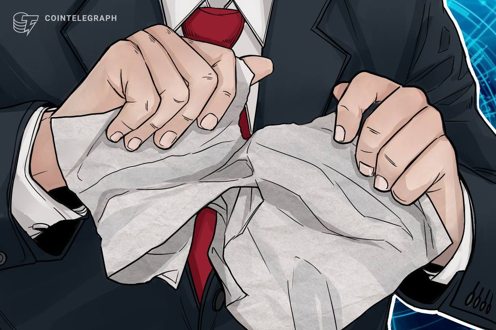

Nvidia Board Is Not Discussing Huang's Return, CNBC Reports
Nvidia's board is not discussing Jensen Huang's return as chief executive, a person familiar with the matter told CNBC on November 16, 2026, with the Washington Post and ABC News separately confirming the position. The board is focused on the Wachtell Lipton investigation into Huang's conduct, even as President Trump said he would not mind a return and a reinstatement petition passed 187,000 signatures.

- 01THE INVESTIGATION — On November 10, 2026, Nvidia's independent directors announced they had retained former acting U.S. Attorney Joon H. Kim and Wachtell, Lipton, Rosen & Katz to conduct a thorough and independent investigation into Jensen Huang's conduct.
- 02THE RESIGNATION — On November 12, 2026, Huang resigned as president, chief executive and director, ending 33 years leading the company he co-founded. Chief financial officer Colette Kress became interim chief executive, and Harvey C. Jones was named the board's first chair.
- 03THE CAMPAIGN — Over the following days, the "Stand with Jensen" petition gathered more than 187,000 signatures, major shareholders urged the board to consider all leadership options including a return, and the Financial Times reported Huang had discussed a comeback with confidants.
WHAT HAPPENEDWhat Happened
Nvidia's board is not discussing bringing Jensen Huang back as chief executive, a person familiar with the matter told CNBC on November 16, 2026. The board is focused instead on the independent investigation into Huang's conduct, the source said, and is not holding any discussions aimed at a return. The Washington Post, citing a person familiar with the board's thinking, reported the same, and ABC News separately confirmed the board's position with its own source.
The report landed on the same day President Donald Trump told reporters he would not mind seeing Huang return. "I would certainly not mind seeing that," Trump said as he departed the White House, according to Reuters. "He could return. There's a big group of people that would like him to return." Trump also said he thought Huang had "learned a big lesson" and questioned whether the alleged Chinese intelligence link had put national security at risk.
Huang resigned on November 12, 2026 as president, chief executive and director, ending 33 years leading the company he co-founded. The independent directors had announced on November 10 that they retained former acting U.S. Attorney Joon H. Kim and his firm, Wachtell, Lipton, Rosen & Katz, to conduct a thorough and independent investigation into whether Huang's conduct compromised national security or Nvidia's secrets. Chief financial officer Colette Kress is interim chief executive, Harvey C. Jones was named the board's first chair, and the board said it was selecting an outside search firm for a permanent successor.
The board's reported position cuts against a public campaign for Huang's reinstatement. The "Stand with Jensen" petition had drawn more than 187,000 signatures by the evening of November 16, according to its organizers, with reported support from Elon Musk, Y Combinator chief executive Garry Tan and Epic Games chief executive Tim Sweeney. The Financial Times reported over the weekend that Huang had discussed a possible comeback with confidants, though Altimeter Capital founder Brad Gerstner, who has urged the board to consider that option, told CNBC on November 16 that Huang had not discussed a comeback with him. Nvidia's shares fell 4.1 percent on Monday, and are down 27 percent from a month ago.
WHY IT MATTERSThe board has drawn a line between the investigation and the succession
The CNBC report, corroborated by the Washington Post and ABC News, is the first indication of where the board itself stands on the return question, and it points the other way from the public pressure. Trump, Musk, major shareholders and nearly 190,000 petition signatories have all pushed for a comeback; the board, according to three separate sourcing lines, is not even discussing one. That gap matters because the board, not the petition, decides who runs Nvidia.
The sequencing is the substance. By keeping the Wachtell investigation ahead of any succession discussion, the board is signaling that no leadership decision moves until the inquiry closes. A company spokesperson told CNBC that Nvidia is still selecting a search firm and has "not formally engaged any potential candidates," and that speculation about individual candidates is premature. Until the investigation reports, the return question is a public debate, not a board agenda item.
WHAT TO WATCHTuesday's earnings call is the first test of the new leadership
Nvidia reports third-quarter fiscal 2027 results on November 17, after the market closes, with the earnings call at 2 p.m. Pacific, the first under interim chief executive Kress. Expect questions on the investigation's timeline, the search firm's appointment, and whether the board will address the return campaign directly. The results themselves will be read against the 27 percent slide in the shares over the past month.
Watch also for any formal board statement. So far the board's position exists only in anonymous sourcing; a public statement, a search-firm appointment, or a named candidate would be the first hard evidence of the succession plan. The other date on the calendar is the December 1 House interview and December 3 Senate Banking hearing involving Huang, where the investigation's scope could widen in public.
SIGNAL JUDGMENT — ANALYSISThe campaign is loud; the board is silent
Tokenta Signal's judgment: this is the first real counterweight to a week of comeback momentum, and it comes from the only room that matters. A petition can gather 187,000 signatures and a president can bless a return, but neither of them appoints a chief executive. The board's reported refusal to even discuss the question, corroborated by three separate sourcing lines, tells the market the investigation is a gate, not a formality. The risk for investors is not that the board is wrong; it is that the board has said nothing in its own voice. Until the investigation reports or a successor is named, the leadership story will be written by anonymous sources and public campaigns, and the shares will keep trading on both.
WHAT REMAINS UNCERTAINWhat Remains Uncertain
EVIDENCEEvidence
Cointelegraph reported on November 16, 2026 that Nvidia's board is not considering reinstating co-founder Jensen Huang as chief executive, citing a person familiar with the matter who spoke to CNBC, with ABC News separately confirming the board's position; the chipmaker's shares fell 4.1 percent on Monday as a petition calling for Huang's return passed 187,000 signatures.
PRIMARY SOURCESPrimary Sources
- Cointelegraph: Nvidia Board Not Considering Huang Return Despite Trump Support
https://cointelegraph.com/news/nvidia-shares-fall-4-as-board-reportedly-rules-out-huang-return - The Parameter: Nvidia's board isn't considering Huang's return, despite Trump and a 180,000-signature petition
https://theparameter.ai/a/nvidia-board-huang-return/